Hi, I'm Soumi Mukherjee aka Jeweler's Lens
B.Des Final Year Designer at National Institute of Fashion Technology (NIFT Kolkata).
“Crafting stories through form, detail, and design.” I specialize in conceptualizing, rendering, and engineering jewelry that balances aesthetic elegance with thoughtful functionality — translating heritage architecture, sacred geometry, and cultural narratives into contemporary, market-relevant luxury adornments.
The Four Signature Collections
Exploring transformable mechanics, architectural grandeur, sacred geometry, and classical musical resonance.
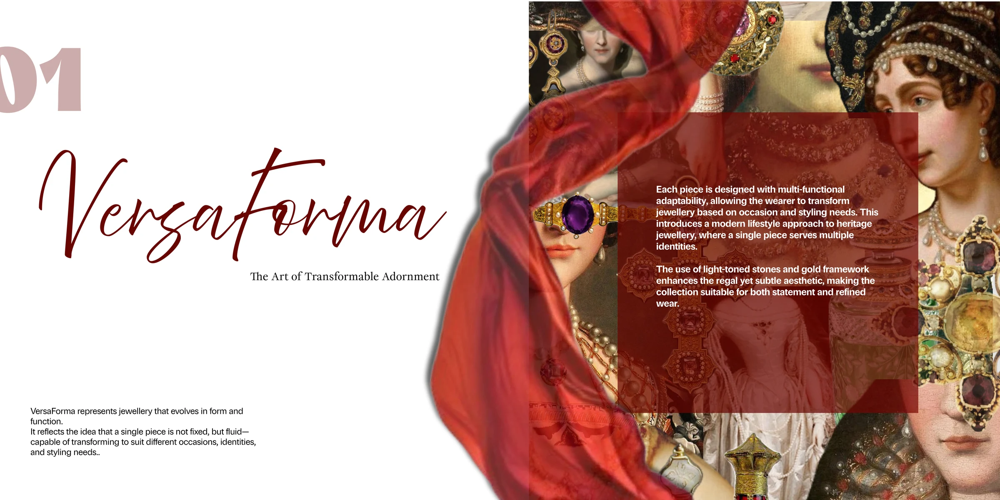
VersaForma
The Art of Transformable AdornmentVersaForma represents jewellery that evolves in form and function. It reflects the idea that a single piece is not fixed, but fluid — capable of transforming to suit different occasions, styling needs, and individual identities. Inspired by the ornamental richness of Victorian Jewellery and balanced with structured geometric rectangles and triangles.
Interactive Modularity Demo: One Piece, Multiple Identities
Click below to observe how VersaForma converts between statement royal gala wear and versatile festive adornments.
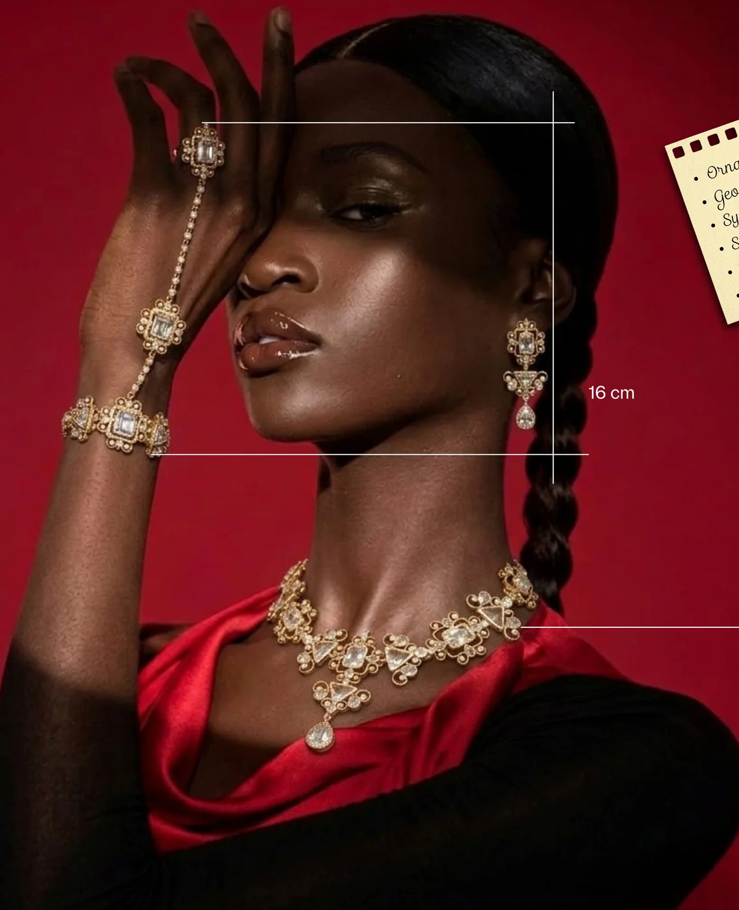
Full Royal Statement Necklace: Complete regal Victorian composition with central drop pendant and geometric filigree links articulated to drape smoothly over the collarbone.
Precision Clasp Disconnect
Subtle mechanical hinges at the pendant base allow the central motif to release smoothly without specialized tools.
Hair-Chain Fixture Attachment
The released pendant docks directly into an accompanying filigree hair-chain to become an ornate bridal Maang Tikka.
Stud-to-Drop Articulation
Earrings disengage between the top 2.5cm rectangular stud section, the 1.5cm triangular filigree link, and the 2.5cm pear drop.
Convertible Royal Necklace (➔ Maang Tikka)
Balancing structured geometric forms with ornamental scrollwork. Draped gracefully over the collarbone with modular detachment.
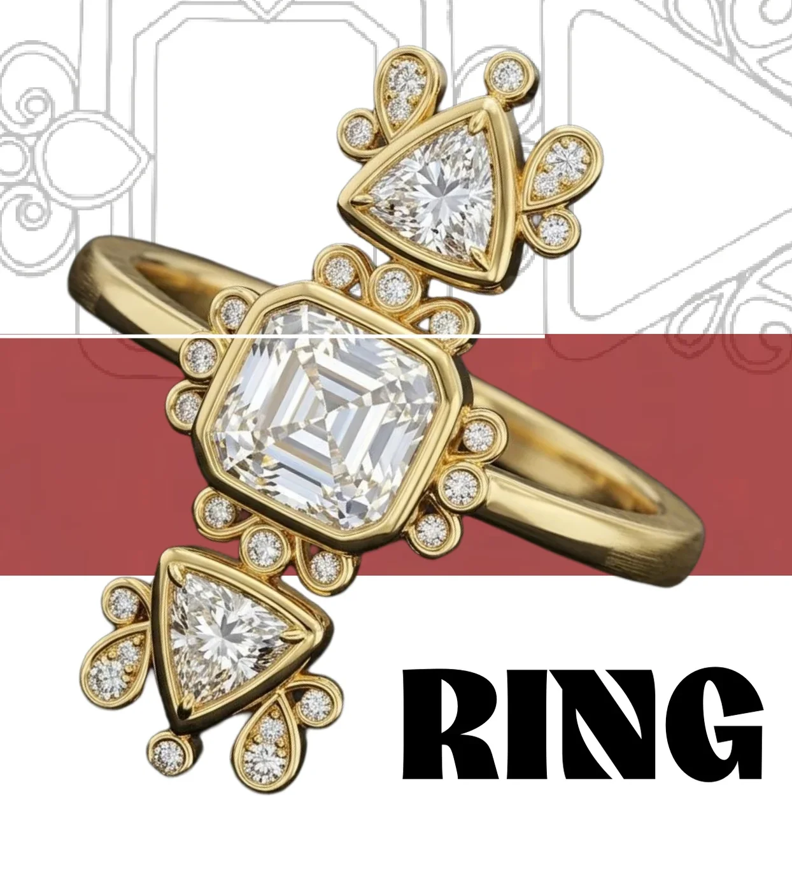
Geometric Cluster Ring
Minimalist symmetry with cluster-set diamonds, dainty band, and triangular accent geometry.
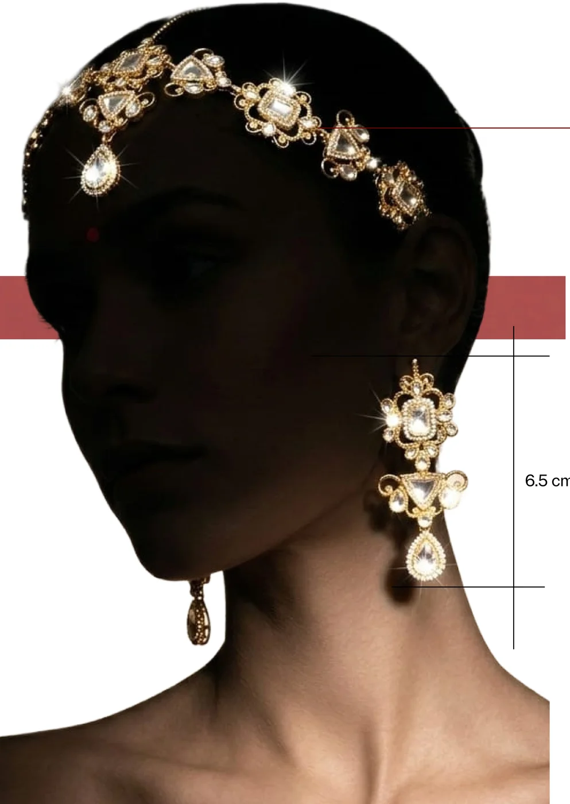
Maang Tikka & Multi-Tier Earrings
Ornamental filigree drop earrings articulated with pear and triangular stones, wearable in three length configurations.
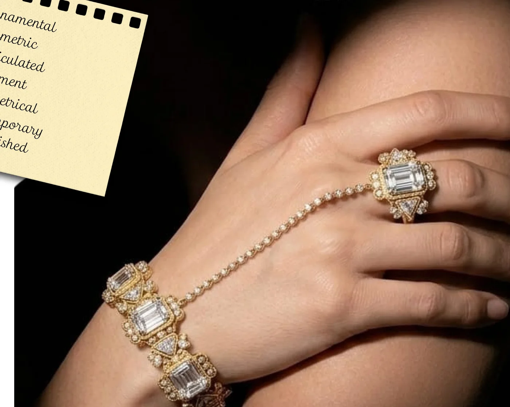
Articulated Slave Bracelet
Fluid hand ornament bridging heritage Indian hathphool tradition with modern Victorian filigree linear geometry.
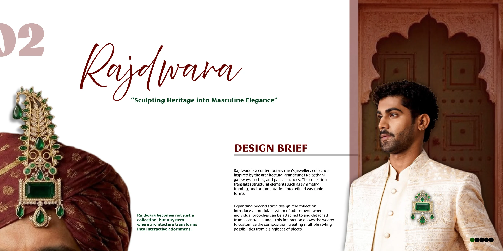
Rajdwara
Sculpting Heritage into Masculine EleganceRajdwara is a contemporary men’s jewellery collection inspired by the architectural grandeur of Rajasthani gateways (pols), arches (torans), and palace facades. Expanding beyond static design, the collection introduces an interactive modular system of adornment, where individual brooches attach and detach from a central royal Kalangi.
The Modular Kalangi System: Architecture Into Interactive Adornment
Inspect the 4 architectural components designed to dock into the central Kalangi base or be worn individually as sherwani brooches.
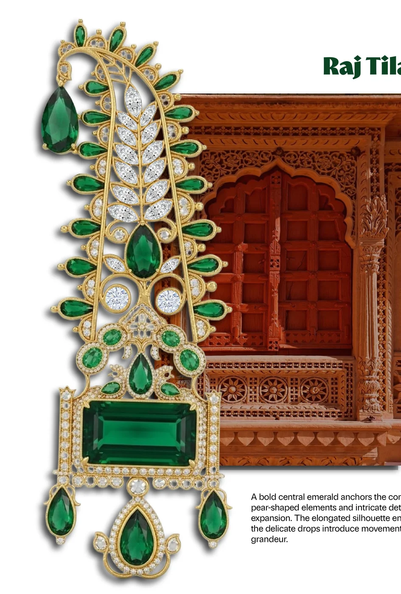
Complete Raj Tilak Kalangi System: The master royal Rajput head adornment featuring a structured upward architectural flow, massive central emerald, and the integrated rail slot docking system.
Rail Slot Base Docking
Kalangi base unit features a precision-machined 5–6 mm rail slot channel accommodating multiple brooch attachments.
Dual Utility Brooch Conversion
When removed from the headpiece, each unit functions as a self-standing brooch with hidden needle clasps for sherwanis or bundis.
Architectural Symmetry & Emerald Drops
Pear-shaped emerald drops introduce rhythmic movement, evoking the ceremonial torans of Jaipur and Udaipur palaces.
Raj Tilak Kalangi
Ceremonial Rajput head crest with structured upward architectural flow, massive central emerald, and docking rail slot.
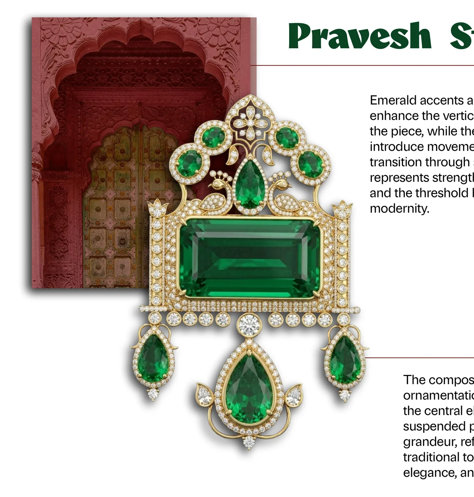
Pravesh Stambh Brooch
Palatial architectural arch with peacock and floral motifs, emerald-cut centerpiece, and pear-shaped drops.
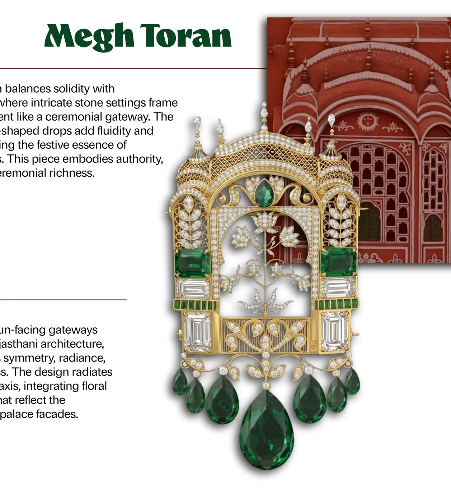
Megh Toran Brooch
Ceremonial gateway inspired with floral trellis jaali and five cascading pear-shaped emerald drops.
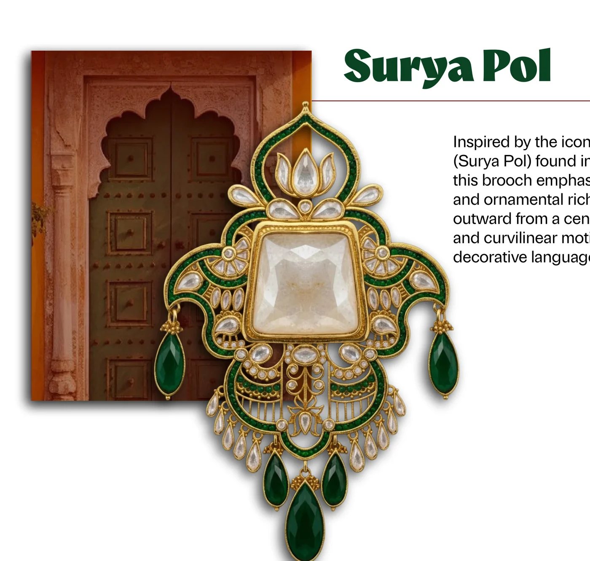
Surya Pol Brooch
Radiant sun gateway symmetry with floral arabesque detailing, cusped arches, and bezel-set gemstones.
📐 Rajdwara Design & Material Technical Specification Matrix
| Parameter | Brooch 01 (Pravesh) | Brooch 02 (Megh Toran) | Brooch 03 (Surya Pol) | Kalangi (Base Unit) |
|---|---|---|---|---|
| Product Type | Detachable Brooch | Detachable Brooch | Detachable Brooch | Modular Kalangi |
| Inspiration | Architectural Arch | Dome & Jharokha | Fort Facade Lines | Royal Rajput Crest |
| Dimensions | 70 × 30 mm | 65 × 50 mm | 60 × 35 mm | 110 × 40 mm |
| Metal & Finish | 18K Yellow Gold (High Polish) | 18K Gold (Textured Polish) | 18K Gold (Mirror Polish) | 18K Gold (Filigree + Polish) |
| Primary Stone | Emerald (12 × 8 mm Pear) | Emerald (10–12 mm Oval) | Emerald (14 × 10 mm Cut) | Emerald (18 × 12 mm Cut) |
| Mechanism | Hook Attachment | Sliding Hook | Lock Hook | Rail Slot System |
| Approx. Weight | 14–18 g | 15–20 g | 16–22 g | 28–35 g |
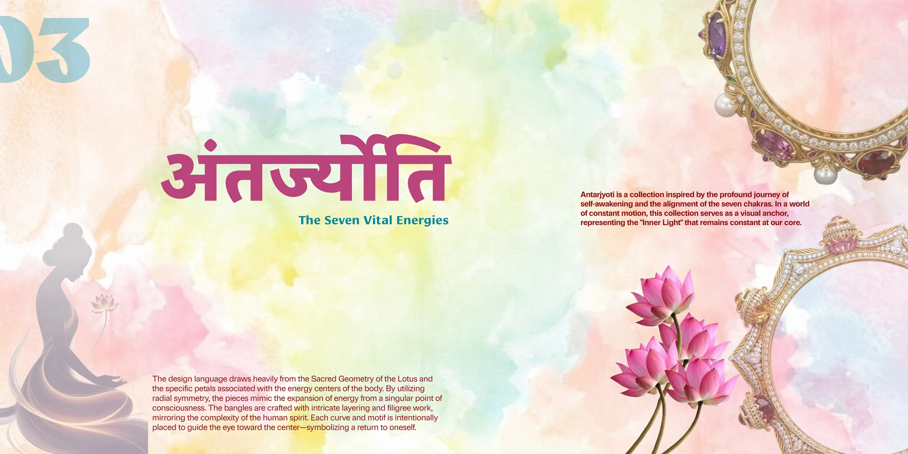
अंतर्ज्योति (Antarjyoti)
The Seven Vital EnergiesAntarjyoti is a collection inspired by the profound journey of self-awakening and the alignment of the seven chakras. In a world of constant motion, this collection serves as a visual anchor representing the "Inner Light". Drawing heavily from the Sacred Geometry of the Lotus and radial expansion of energy from a singular point of consciousness.
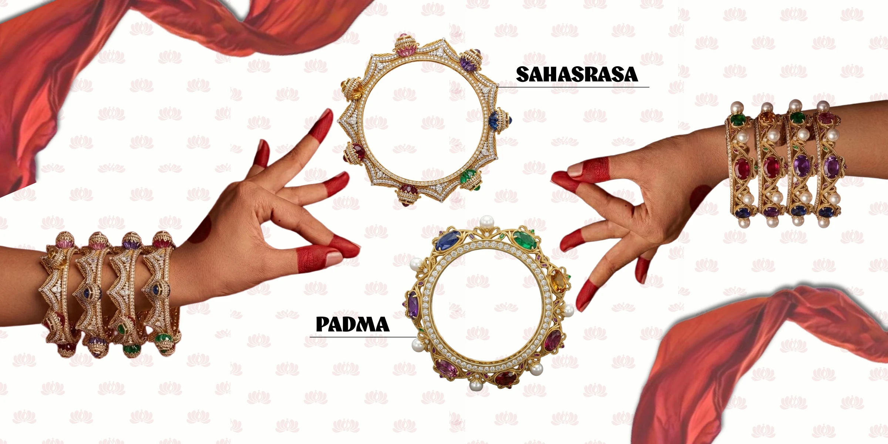
Sahasrasa & Padma Bangles Mudra Showcase
Radial symmetry with crown-like motifs and sacred lotus silhouettes, modeled on alta-painted hands.
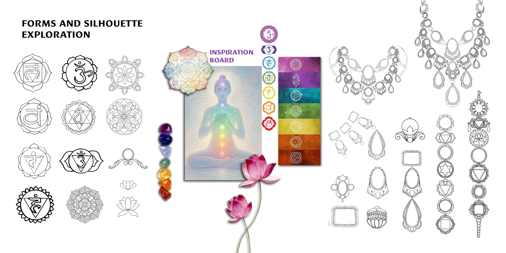
Sacred Lotus Geometry & Chakras
Translating spiritual energy nodes and lotus petal expansion into wearable micro-pavé jewellery.
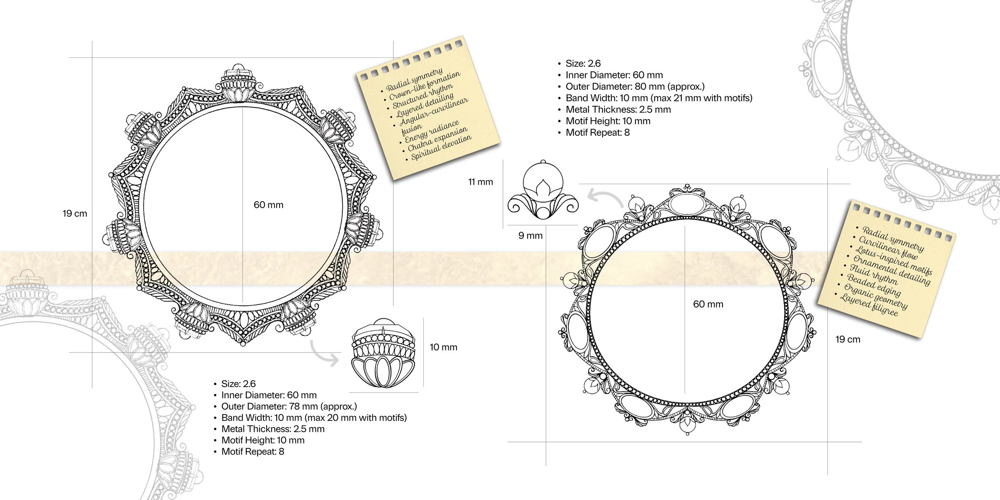
CAD Projections & Orthographic Views
Detailed manufacturing blueprints showing 8-fold radial repeats, crown formations, and layered filigree.
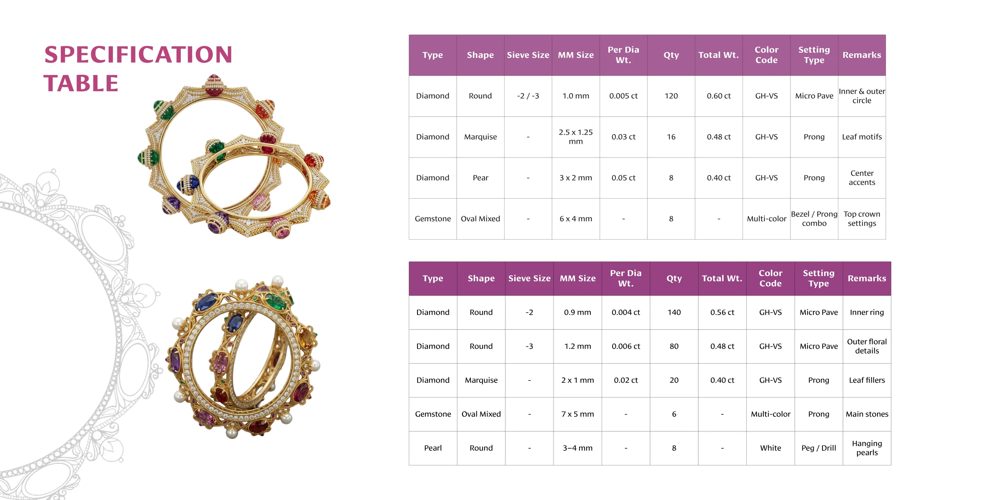
Diamond & Sieve Specification Matrix
Comprehensive manufacturing weights and sieve sizes for high jewelry casting and stone setting.
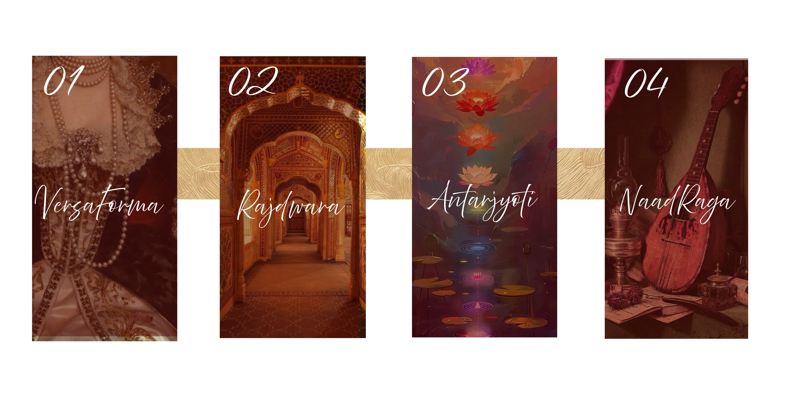
NaadRaga
The Rhythm of Acoustic ResonanceNaadRaga explores the timeless intersection of classical Indian music, stringed acoustic instruments (such as the tanpura, sarod, and sitar), and wearable lifestyle accessories. Translating harmonic frequencies, acoustic string tension, and resonant wooden chambers into fluid metallic curves, rhythmic filigree, and resonant adornment.
From Hand Sketchbook to High Jewelry
Authentic pencil, ink, and gouache explorations from Soumi's design sketchbooks, capturing the genesis of arches, motifs, and silhouettes.
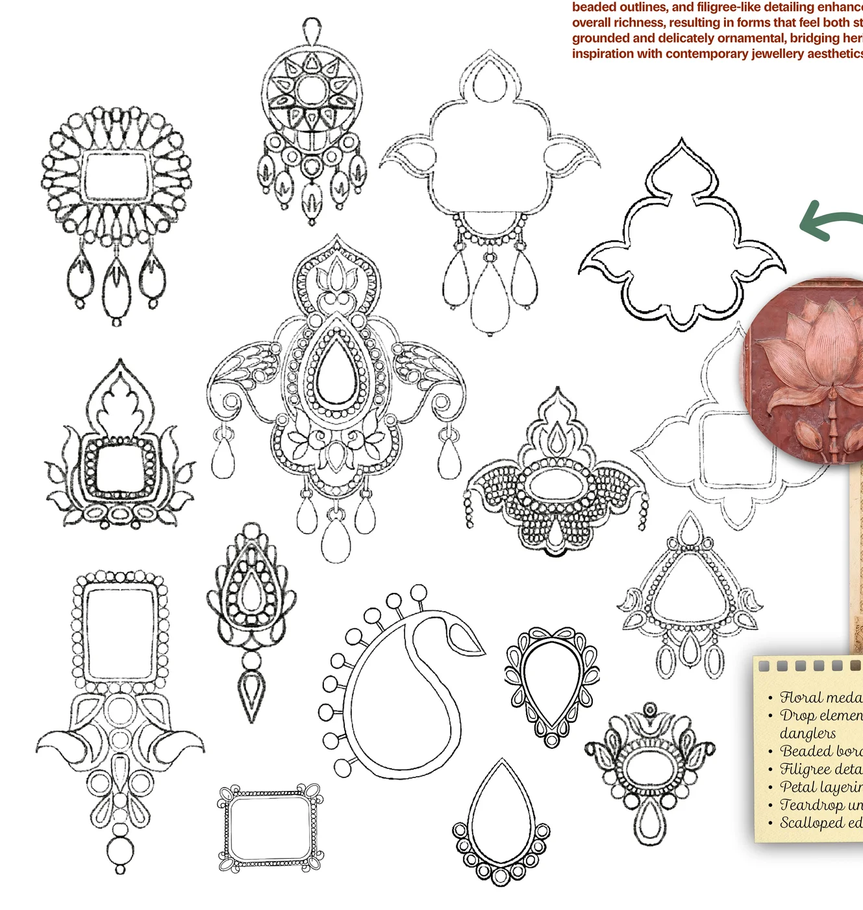
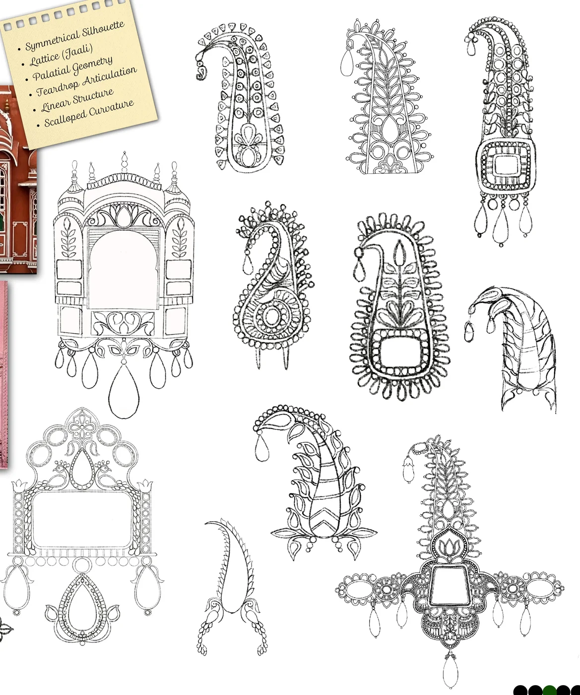
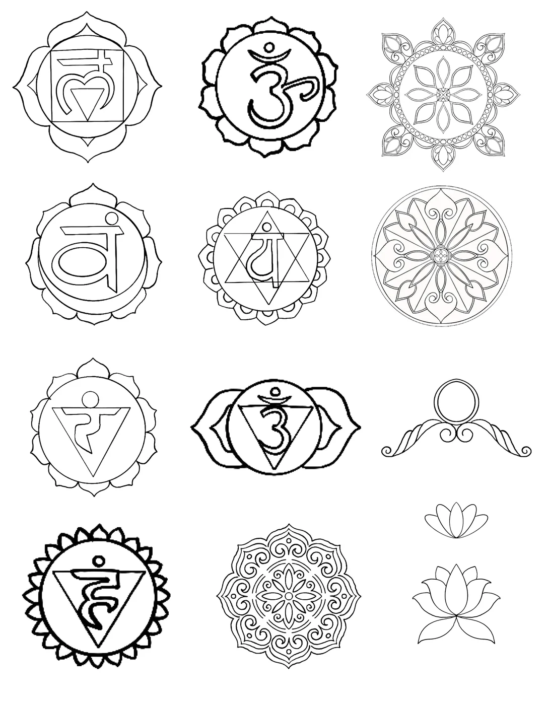
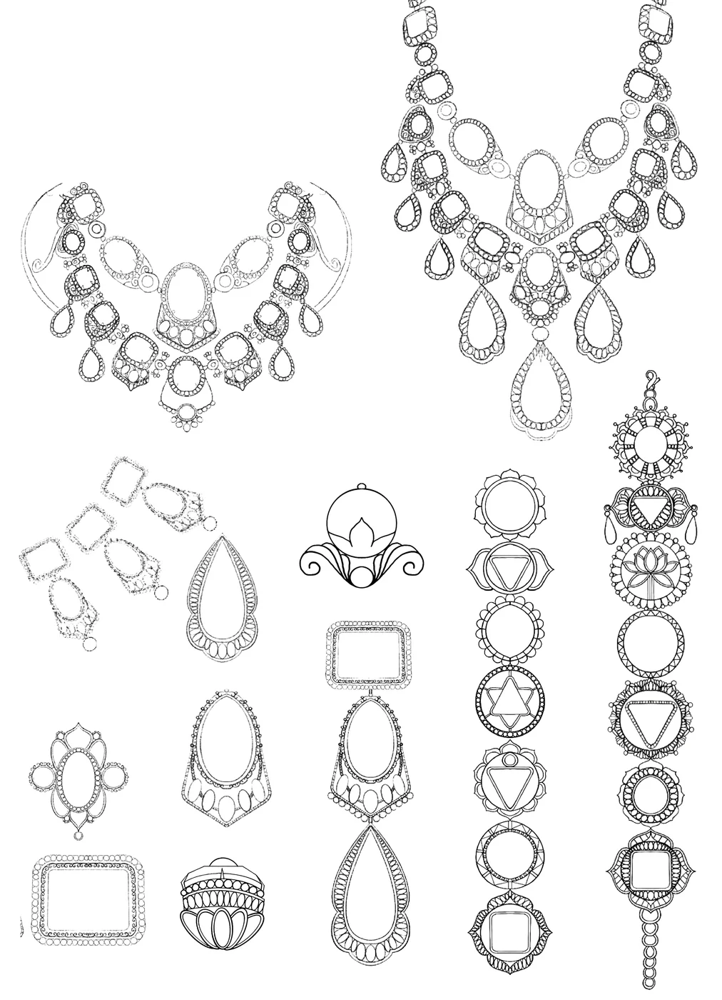
Physical Portfolio Spread Reader
Flip through all 21 high-resolution jury spreads submitted for NIFT 7th semester evaluation.
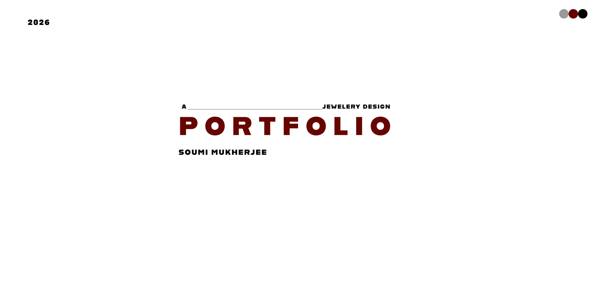
About Soumi & Professional Resume
Academic credentials, industry volunteering, design thinking ethos, and technical competencies.

Soumi Mukherjee
Fashion & Lifestyle Accessories Designer (Jewelry)“Crafting stories through form, detail, and design.”
🎓 Education
Specialized in jewelry engineering, metal smithing, gemology, trend forecasting, client persona mapping, and luxury brand design.
Extensive training in classical painting, color theory, anatomical sketching, and traditional Indian visual motifs.
💼 Professional Volunteering & Project Experience
Assisted in luxury retail brand operations, visual merchandising displays, and client styling consultations.
Coordinated designer curations, visual installations, and lifestyle accessory exhibitions at Eastern India's premier design festival.
Conceptualized and executed large-scale artisanal mural celebrating regional handcrafted textile heritage.
Directed accessory styling, lighting coordination, and backstage garment preparation for senior graduation runways.
⚡ Skills & Technical Competencies
Design & Modeling
Bench & Manufacturing
Strategic & Brand
Achievements & Sports
Ready for Placements & Design Collaborations
Available for full-time jewelry designer positions, luxury accessory design roles, custom couture commissions, and placement interviews. Reach out directly or send an inquiry below.